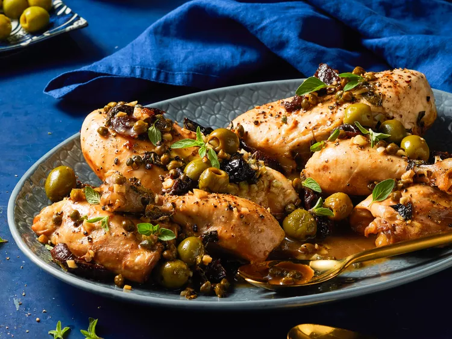

Chicken Marbella

Description
“This dish is delicious and will definitely be on heavy rotation,” Allrecipes community member Moraa Andima says of this
Chicken Marbella recipe. “It looks and smells amazing and will impress your guests. The best part is that it looks like
you spent all day cooking, but is really easy to make (don't even have to chop anything).”
Ingredients
- ⅓ cup pitted prunes, halved
- 8 small green olives
- 2 tablespoons capers, with liquid
- 2 tablespoons olive oil
- 2 tablespoons red wine vinegar
- 1 tablespoon minced garlic (about 3 cloves)
- 1 tablespoon dried oregano
- 2 bay leaves
- salt and pepper to taste
- 1 (3 pound) whole chicken, skin removed and cut into pieces
- ¼ cup packed brown sugar
- ¼ cup dry white wine
- 1 tablespoon chopped fresh parsley, for garnish
Directions
- Combine prunes, olives, capers, olive oil, vinegar, garlic, oregano, bay leaves, salt, and pepper in a medium bowl; mix
well. Spread mixture in the bottom of a 10x15-inch baking dish. Add chicken pieces, stir and turn to coat. Cover and
refrigerate overnight.
- Preheat the oven to 350 degrees F (175 degrees C). Sprinkle brown sugar on top of marinated chicken and pour white wine
all around chicken.
- Bake in the preheated oven for 1 hour, spooning juices over chicken several times as it is baking. Serve on a platter,
pouring juices over the top, and garnish with fresh parsley.
Back to the Home page